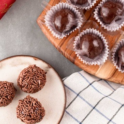
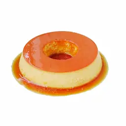
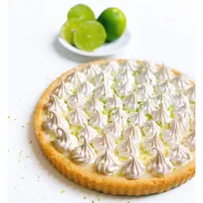

Brigadeiro

Ingredientes:
- 1 lata de leite condensado
- 2 colheres de sopa de cacau em pó
- 1 colher de sopa de manteiga
- Granulado para decorar
Modo de Preparo:
- Misture o leite condensado, o cacau e a manteiga em uma panela.
- Cozinhe em fogo baixo, mexendo sempre, até desgrudar do fundo da panela.
- Deixe esfriar, faça bolinhas e passe no granulado.
Pudim de Leite

Ingredientes:
- 1 lata de leite condensado
- 2 latas de leite (medida da lata de leite condensado)
- 3 ovos
- 1 xícara de açúcar (para a calda)
Modo de Preparo:
- Caramelize o açúcar em uma forma de pudim.
- Bata os ingredientes no liquidificador.
- Despeje a mistura na forma e leve ao forno em banho-maria por 1 hora.
Torta de Limão

Ingredientes:
- 200g de biscoito maisena
- 100g de manteiga derretida
- 1 lata de leite condensado
- 1/2 xícara de suco de limão
- Raspas de limão (para decorar)
Modo de Preparo:
- Triture os biscoitos e misture com a manteiga.
- Forre uma forma com a mistura e leve ao forno por 10 minutos.
- Misture o leite condensado com o suco de limão.
- Despeje a mistura na base e leve à geladeira por 2 horas.